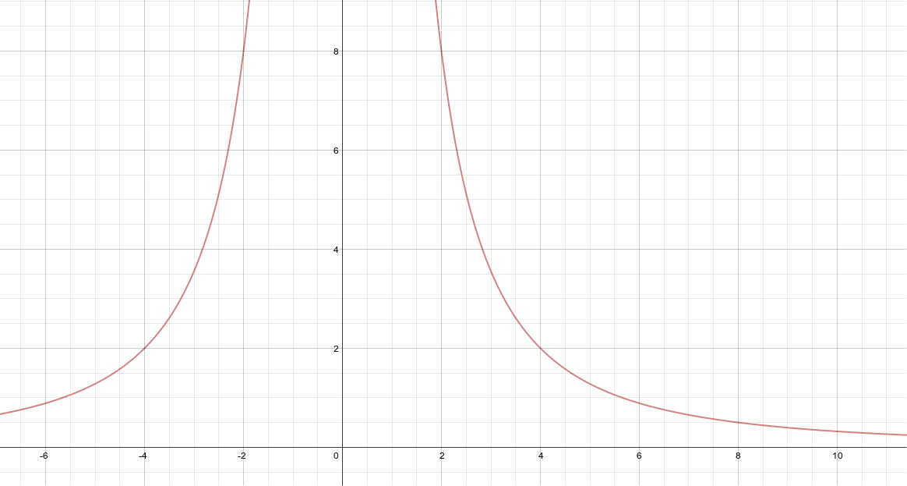

Power Functions, Their Graphs And Applications¶

Graphs of different power functions¶
Source: Section 2.2 Figure 2.14
Explanation:
This artifact demonstrates graphs of different power functions (\(y = a*x^n\)).
There are really four different ways that power functions will look like.
The orange function is one where \(n < 0\).
The red on is where \(n > 0\)
The green one is where \(n = 1\)
The purple on is where \(0 < n < 1\)
Artifact:
Orange: \(y = x^-1\)
Red: \(y = x^2\)
Green: \(y = x^1\)
Purple: \(y = x^{1 \over 2}\)

Writing a power function from a list of data¶
Source: Chapter 2 Test Non Calculator #1, and python code
Explanation:
This artifact demonstrates writing a power function from a list of data.
I got the first statement (\(2^n = {1 \over 4}\)) from the first two points in the data set.
In the x, \(1x = 2\\x = {2 \over 1} = 2\)
In the y, \(32x = 8\\x = {8 \over 32} = {1 \over 4}\)
From there I infer that \(2^n = {1 \over 4}\), solve for n, and compose a power function.
Numeric Algebraic Graphic Connection
My function is backed up by this graph (look at 2,8 - it matches the data set):
{kind=link}
Application and Independent Thinking
I wrote a python script to validate my function.
This demonstrates Application because I was able to apply this math problem into a program, which is a very usefull skill.
It also demonstrates independent thinking because I taught myself how to write python code.
It runs successfully:
points = ( # dataset
(1.0, 32.0),
(2.0, 8.0),
(6.0, 8.0/9.0),
(8.0, 0.5),
(10.0, 0.32),
)
def f(x): # This is a function. A x value gets plugged in, and a y value comes out.
return 32.0*x**-2 # same as 32*x^-2
for x,y in points: # This is a recursive loop. x and y are variables points from our dataset
assert y == f(x) # If y is not equal to f(x), then the program will fail.
Artifact:
| x | y |
|---|---|
| 1 | 32 |
| 2 | 8 |
| 6 | 8/9 |
| 8 | 0.5 |
| 20 | 0.32 |
\(2^n = {1 \over 4}\\ n = -2\\ 8 = a2^{-2}\\ a = 32\\ y = 32x^{-2}\)
Applications of power functions through direct or indirect variation¶
Source: Chapter 2 Test (calculator portion) #2
Explanation:
This artifact demonstrates applications of power functions through direct or indirect variation.
From reading the problem, I could infer that (0.6, 14) was a point on the graph of the power function being described.
I understand as well that the function would be a function of length squared, and that is how I got the algebraic function.
Using my first observation of the point on the line, I plugged in what I knew about the previously defined algebraic function (x and y).
At that point, I was able to solve for the only remaining variable, the constant of variation.
Having been provided the power of the x in the problem, and having solved for the constant of variation, I was able to compose the formula \(s(l) = 39.89 * l^2\)
From there, it was only a matter of solving for s(0.65) to answer the question.
Application
This problem demonstrates the application of a classroom math problem to a real life situation.
Artifact:
The top speed at which a person can sprint varies directly as the square of their stride length.
If a person can run at a top speed of 14 mph with a stride length of 0.6m,
how fast can she run if she increases her stride length to 0.65 meters?
\(s(l) = a*l^2\\ 14 = a*0.6^2\\ a = 38.89\\ s(l) = 39.89l^2\\ s(0.6) = 13.969 \text{ mph}\\ s(0.65) = 16.393 \text{ mph}\)